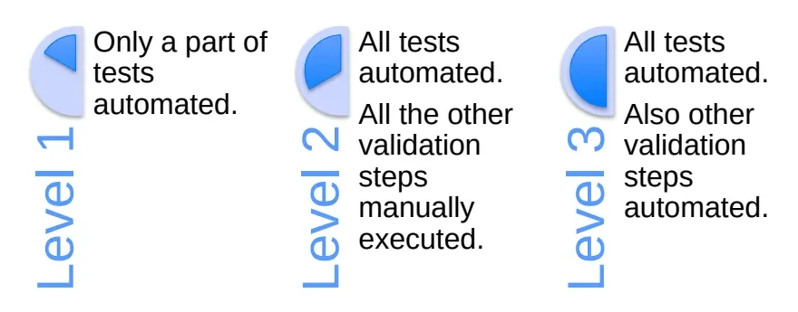
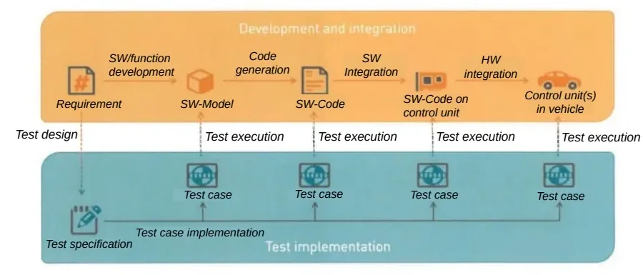
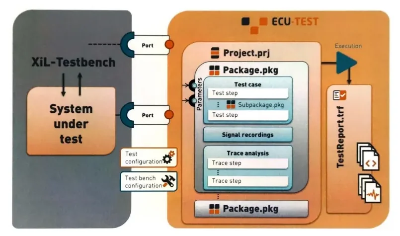

Test Automation¶
Manual validation does not scale: a vehicle function can have dozens of test cases, each to be re-executed at every software release, often on a HIL bench that sits idle at night. Test automation replaces the repetitive human part of validation with tools, scripts and software that replay pre-defined actions against the unit under test (UUT) — in our context, an ECU or a whole vehicle function — and produce a report with the verdict and, on failure, the cause.
This lesson surveys the automation toolchains used in the bootcamp:
- CANoe + CAPL — test modules scripted in a C-like language, inside the Vector environment you already know
- Vector vTESTstudio — a dedicated authoring environment with tabular, graphical and programming notations, executed through CANoe
- TraceTronic ECU-TEST — a drag-and-drop tool that orchestrates the whole test environment without programming skills
- NI VeriStand Stimulus Profile Editor + NI TestStand — real-time sequences on a NI HIL target, composed into automated campaigns
Why automate¶
A manual validation cycle has four steps: requirement analysis, test writing, test execution, report analysis. Automation takes over step 3 — and partly step 4, since the report is generated by the tool:
flowchart LR
A["1. Requirement analysis"] --> B["2. Test writing"]
B --> C["3. Test execution"]
C --> D["4. Report analysis"]
subgraph AUTO["Test automation"]
C
end
style AUTO fill:#e8f4e8,stroke:#4a4The benefits compound over a project lifetime:
| Property | What it means in practice |
|---|---|
| Efficient | A huge number of tests can run in 24 hours |
| Flexible | Tests run unattended, even at night |
| Fast | Execution is much faster than a human operator |
| Repeatable | The identical test set re-runs at every software release |
| Reliable | No human-generated errors in execution and data logging |
| Versatile | Tests already written are reused in new projects |
Automation is not free
The two real limitations are the initial investment (licenses, bench setup, writing and debugging the automated tests) and the fact that it is not applicable to all tests — subjective evaluations, exploratory testing and one-off checks still need a human. Weigh the investment against how many times the test set will be re-executed.
On the plus side, automation also removes people from dangerous tests and hard environmental conditions, and the automatic reports largely dispose of a separate bug-tracking phase: the output highlights not just the result but, on failure, the cause of the negative verdict.
Automation levels¶
Not every project automates the same share of the workflow:

- Level 1 — only a part of the tests is automated.
- Level 2 — all tests are automated; the other validation steps (requirement analysis, test writing, report review) stay manual.
- Level 3 — all tests automated, and the other validation steps automated too (e.g. report generation and distribution, campaign scheduling).
CANoe + CAPL¶
The first automation approach builds directly on the CANoe environment and the CAPL language from the previous lessons.
CANoe can simulate entire networks from the communication database (DBC): the rest-bus nodes exist in simulation, their signal values are editable, but the signal logic of the real ECU software is not simulated — the simulated nodes only send what you tell them to send. That is enough to stimulate an ECU under test and observe its reactions.
Two CAPL-based building blocks turn this into automated testing:
- Network nodes — CAPL programs attached to simulation nodes. They can emulate ECU software behavior, drive panels, control HIL hardware, and simulate whole networks.
- CAPL test modules — CAPL programs structured as test cases: they stimulate signals, wait for conditions, check responses, and log verdicts. CANoe collects the outcome of every test module into a test report.
When CAPL test modules are the right choice
CAPL gives total flexibility — anything you can express in C-like code can be a test — but the programming effort grows with test complexity, the report content must be customized inside each test's code, and the tests are fragile against database or interface changes. For large, long-lived test sets, a dedicated authoring tool (vTESTstudio, ECU-TEST) is usually more maintainable.
vTESTstudio¶
vTESTstudio is Vector's development environment for automated ECU tests. Its distinguishing feature is that it offers three notations for the same test, freely mixed within a project:
| Notation | Editor | Best for |
|---|---|---|
| Table-based | Test Table Editor | Classic step-by-step test cases (stimulate → wait → check) |
| Graphical | Test Sequence Diagram, State Diagram | Reviews, coverage-driven test generation |
| Programming-based | Programming Editor | Complex logic, CAPL-like full control |
Project setup and the build–run pipeline¶
vTESTstudio does not execute tests by itself: it compiles them and hands them to CANoe. The end-to-end flow is:
flowchart LR
A["New Project<br/>(File | New Project)"] --> B["Import CANoe<br/>configuration"]
B --> C["New Test Unit"]
C --> D["Add Test Table /<br/>Test Case"]
D --> E["Build All Test Units<br/>→ VTUEXE"]
E --> F["CANoe: Test | Test Setup |<br/>Test Configurations"]
F --> G["Add Test Unit<br/>(select VTUEXE)"]
G --> H["Start measurement F9<br/>→ run test"]
H --> I["Open Test Report"]In detail:
- Create the project — File | New Project, choose path and name. To share naming and variables with the bus setup, open CANoe, load your configuration and import that configuration into vTESTstudio before writing any test.
- Create a Test Unit — open the Project View (Layout | Views | Project View), right-click the project, New Test Unit. A test unit is the container that will later be compiled and attached to CANoe.
- Add a Test Table — right-click the test unit, Add | Test Table.
- Create a Test Case — select the test table, click Command…, type
test: the autocomplete input assistance opens; select Test Case and press Enter. The test case appears in the Test Tree. - Build — Home | Build All Test Units. The Output window shows errors
or warnings. A successful build generates an executable test unit
(
.VTUEXE) in the folder defined under Project | Configuration… | Build. - Configure in CANoe — open the CANoe configuration the system environment was imported from, go to Test | Test Setup | Test Configurations, add a test configuration, then use the Add Test Unit icon and select the VTUEXE file at its output path.
- Execute — start the CANoe measurement with F9, click the Start icon to run the test, and when execution finishes click Open Test Report to inspect the result.
Anatomy of a test case¶
A typical table-notation test case follows a fixed rhythm:
| Command | Role |
|---|---|
| Preparation | Establish the initial conditions |
| Set | Write a symbol (signal) from the DBC |
| Wait | Give the ECU time to react |
| Check | Verify a symbol after the set |
| Completion | Exit conditions, restore state |
| Await Value Match | Check that a symbol reaches a value before a timeout |
Two reuse mechanisms keep large test sets manageable:
- Test Case Definitions — for repetitive tests that differ only in signal values. From Functions add a Test Case Definition, give it a name and parameters, and write the test once with symbols bound to parameters. In the Test Tree you then create a Test Sequence that calls the definition several times, each time with a different parameter value.
- Function Definitions — for repeated fragments of test logic: define the commands once as a function and call it from any test case.
System variables (needed e.g. for values not on the bus) are created in CANoe under Environment, added according to the DBC, and then associated to the test.
Graphical notations¶
The Test Sequence Diagram editor defines tests graphically — flows with decisions, forks and joins — while tabular test code sits behind each graphical element. The notation is particularly suitable for reviews, and by default one test case is generated for each path through the diagram (finer-grained control is possible).
The State Diagram editor goes further: you model the expected behavior of the system under test as a state machine, and test cases are generated automatically from the model based on transition coverage. Several generation algorithms are supported, e.g. the Chinese Postman algorithm and a breadth-search-based algorithm.
Parameters and variants¶
Parameters are constant values accessible from the test sequence in any implementation language; they are shown in the Symbol Explorer under the Parameters tab. Four kinds exist:
| Kind | Contents | Typical use |
|---|---|---|
| Scalar parameter | one constant value | a fixed threshold |
| Scalar list parameter | 1…n values for one variable | iterate the same test over several temperatures |
| Struct parameter | a set of associated scalar values | one test vector (stimulus + expected values) |
| Struct list parameter | a list of value tuples | iterate over many test vectors |
Variants handle ECU and test diversity through variant properties: they drive conditional test coding, give access to variant-dependent parameter values, and define variant-dependent test cases or test groups. Properties are transferred into the test code from the Symbol Explorer or via text completion.
vTESTstudio vs. raw CAPL
Same CANoe underneath, but the test code is drag-and-drop over pre-defined commands, the generated report is rich in detail without extra coding, and parameter/variant handling makes tests robust against changes — provided you actually use those features.
ECU-TEST¶
ECU-TEST (by TraceTronic) is a standard tool in automotive ECU development that automates the control of the whole test environment, not just the bus simulation. Its declared characteristics:
- supports a broad range of test tools (CANoe, HIL benches, measurement and calibration hardware, …),
- facilitates each validation step, from design to report analysis,
- is based on user-friendly commands and interfaces,
- requires no programming skills,
- allows shared libraries of reusable test building blocks.
Where it sits in the V-cycle¶
ECU-TEST test cases are designed once from the requirement and then executed unchanged at every integration level — model, code, ECU, vehicle:

This is the practical answer to "what changes if the test environment changes?": the test cases don't — only the configuration that binds them to the bench does.
Architecture: project, packages, TCF and TBC¶

- Project (.prj) — the top-level container, holding packages (.pkg) with the test cases (sequences of test steps, possibly nested in subpackages), signal recordings and trace analyses (trace steps). Execution produces the test report (.trf).
- Ports connect the test cases to the system under test through generic interfaces — this is the independence from the environment: test cases reference ports, not concrete hardware.
- Test Configuration (TCF) — declares what is being tested and with what data: the systems under test, the applied simulation models, the A2L and database files, and report/execution settings.
- Test Bench Configuration (TBC) — describes the concrete bench: which tools are connected and how each port maps onto them.
Because ports are bound to tools in the TBC rather than in the test cases, the
same package runs on a MIL model, a HIL rig or the vehicle by swapping
configurations. A typical test structure runs: setup → stimulation and
evaluation steps (with trace analysis of recorded signals) → execution →
report analysis on the generated .trf.
NI VeriStand: Stimulus Profile Editor and TestStand¶
The fourth toolchain automates tests on a NI HIL bench. Two ingredients are needed up front: a UUT (the control unit under test) and a framework — the coded structure that interacts with the UUT automatically, which here includes the VeriStand project the sequences operate on. The automation output is a report highlighting the result and, on failure, the cause of the negative validation.
Real-Time Sequences with the Stimulus Profile Editor¶
The authoring tool is the Stimulus Profile Editor, an NI VeriStand component that looks like a standard IDE (Code::Blocks, Xcode) but manipulates the parameters of the current VeriStand project. To start it: launch VeriStand, open the project, then use the Tool Launcher and open the Stimulus Profile Editor window.
The core construct is the Real-Time Sequence (RTS): the translation into code of a single test case — the maneuvers the tester would perform by hand in one test. Recurring maneuver sequences (e.g. emulating a moving vehicle) are factored out into libraries that test cases recall; library syntax is identical to test case syntax.
The editor's panels:
| Panel | Contents |
|---|---|
| Code | the sequence syntax |
| Primitives | Variables; Expressions (assignments); Structures — loops (while, do while, for), conditionals (if/else), Multitasking for parallel instructions with independent stop; Advanced — suspend the sequence while the real-time primary control loop iterates; Miscellaneous — documentation, state lists |
| Quantities | Return Variable (the sequence output: Boolean for OK/KO, or double for a numeric result), Parameters (inputs), Local Variables, Channel References (links to project quantities: aliases, CAN signals, software variables, analog/digital signals) |
| References | all real-time sequences called by the selected one |
| Output | errors and warnings from compilation |
To execute a sequence: compile it, fix any errors/warnings, open the
project screen (a simplified vehicle–driver interface showing the project
parameters involved), invoke the RTS control from the left menu, and press
Play. When the sequence finishes, the result is the Return Variable value
— true/false for a Boolean, or the numeric output for a double.
Validate the automation before trusting it
Run the manual test and the automated sequence on the same condition and check the results are consistent. Only then is the test case automated properly.
Automating a whole Vehicle Function¶
A VF's test set is a collection of RTS files. Two ways run them as an unattended campaign.
Option 1 — Stimulus Profile. The profile first recalls the VeriStand project through VeriStand Control (open/close and actively control the project), then invokes each RTS with a Real-Time Sequence Call, where you define:
- the file path of the sequence and the target name — the target's full specification: operating system, IP address, processor tasks, the data processing loop, execution mode (Low Latency or Parallel), DAQ and DIO frequency rates, warmup time, target rate (Hz) and timing source timeout (ms);
- the Pass/Fail evaluation: Boolean, Always Pass, or NumericBoundsCheck against a predefined threshold;
- optionally Update Parameters, to modify the inputs and study the UUT's reaction.
After compilation and launch, the run generates a report listing the result of each Real-Time Sequence.
Option 2 — NI TestStand. TestStand is a separate NI product; here it is used not to write sequences in Python, C++ or LabVIEW, but to invoke the RTS files already written in the Stimulus Profile Editor — it replaces the stimulus profile as the campaign container.
sequenceDiagram
participant MS as "TestStand Main Sequence"
participant VS as "VeriStand project"
participant SQ as "VFxx_seq (bridge)"
participant RT as "RTS on target"
MS->>VS: Setup: Open VeriStand Project
MS->>VS: ASAM XIL: create Framework
loop for each test case of the VF
MS->>SQ: Sequence Call
SQ->>VS: Set Variable Values (User Channels)
SQ->>RT: Target Script: run RTS file
SQ->>RT: Wait For State "Finished Run"
RT-->>SQ: Get Parameter Values → Test Result
SQ->>MS: Action Test (limit or Pass/Fail)
SQ->>RT: CleanUp: Target Script Clean Up
end
MS->>MS: Compile → full report (exportable as PDF)The procedure in detail:
- Main Sequence, Setup section — open the project: left path NI VeriStand → Open VeriStand Project; then, under ASAM XIL, select the Framework item to create the framework based on the open VeriStand project.
- Bridge sequence
VFxx_seq— one per test case: - declare the Test Result variable;
- in Setup, call Set Variable Values to set the parameters defined as User Channels in the VeriStand project's System Definition File;
- in Main, create the Target Script from the left menu and define the project path and the RTS file created in the Stimulus Profile Editor;
- call Target Script Wait For State to align with the RTS's Finished Run condition, followed by a Wait as synchronization time buffering;
- call Target Script Get Parameter Values to read back the local Test Result;
- use Action Test to select the verdict mode (numeric Limit Test or Pass/Fail);
- in CleanUp, call Target Script Clean Up to clear the target script and return to initial conditions.
- Main Sequence, Main section — recall the
VFxxsequences in cascade via Sequence Call: as many sequence calls as the VF has test cases. Compiling produces the complete report, exportable as a PDF.
Choosing a tool¶
| CAPL test modules | vTESTstudio | ECU-TEST | |
|---|---|---|---|
| Pre-settings needed | CANoe project settings | CANoe project settings + build | All linked tools + ECU-TEST settings (TCF/TBC) |
| Test implementation | C-like code writing | Drag & drop of pre-defined functions (table/graphical/code notations) | Drag & drop of pre-defined functions |
| Programming skills | Proportional to test complexity | Limited | None |
| Auto-generated report | Customizable inside each test's code | Rich in detail | Simple and intuitive |
| Robustness against changes | Low | Proportional to proper use of parameters/variants | Proportional to proper use of ports/configurations |
Key takeaways
- Automation replaces step 3 (execution) — and much of step 4 (reporting) — of the validation workflow; it pays off when tests are re-executed many times, but needs an initial investment and does not fit every test.
- CANoe + CAPL test modules automate inside the Vector environment with full coding freedom, at the price of fragility and programming effort.
- vTESTstudio authors tests in tabular, graphical (sequence/state diagram) or code notations, compiles them to a VTUEXE, and executes them in CANoe via Test Configurations; Test Case Definitions, functions, parameters and variants keep large test sets maintainable.
- ECU-TEST orchestrates the whole test environment without programming: ports plus TCF/TBC configurations make the same test cases run from SW model to vehicle.
- On NI HIL rigs, Real-Time Sequences written in the Stimulus Profile Editor automate single test cases; stimulus profiles or NI TestStand (via ASAM XIL framework and bridge sequences) run a whole VF campaign and generate the report.
Where this leads
Automated tests are written against functional specifications — see TestCases for how test cases are drafted from a VF, and HIL Users for the benches these automated campaigns run on.
Source material¶
This article was distilled from the academy lesson materials:
- :material-file-pdf-box: Test Automation slides ENG — PDF, 2.0 MB
- :material-file-pdf-box: Test automation — PDF, 4.2 MB
- :material-file-pdf-box: vTestStudio — PDF, 2.5 MB